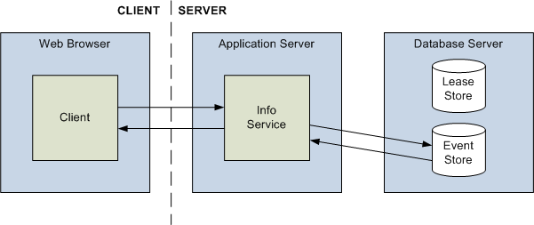

|
|||||||||||
| PREV PACKAGE NEXT PACKAGE | FRAMES NO FRAMES | ||||||||||
See:
Description
| Interface Summary | |
|---|---|
| IInfoService | A set of methods that variously expose Intelligence Analysis Platform service information, log error messages, evaluate security access, and test date and time information for validity in particular time zones. |
The Intelligence Analysis Platform info service provides clients with a variety of functionality that is relevant to the whole system.

Among other things, clients can use the info service to:
| Web method | Description |
|---|---|
EvaluateSecurityLevels |
Determines the levels of access that a user with particular security dimensions would have on an item with particular permissions. |
EvaluateSecurityLevelsForCurrentUser |
Determines the levels of access that the current user would have on an item with particular permissions. |
GetDataSourcesAndSchema |
Retrieves information about the data sources that this instance of the Intelligence Analysis Platform connects to, and the schema they all use. |
GetChartingScheme |
Retrieves a charting scheme by name. |
GetChartingSchemeNames |
Retrieves the names of all the charting schemes that this instance of the Intelligence Analysis Platform supports. |
GetSecurityDimensionsForCurrentUser |
Retrieves all the security dimensions in the system, filtered according to whether the current user is permitted to see their values. |
GetSecuritySchemesForCurrentUser |
Retrieves all the security schemes in the system, filtered according to whether the current user is permitted to see them. |
GetTimeZoneInformation |
Retrieves information about all the time zones supported in this instance of the Intelligence Analysis Platform, localized for the current user. |
GetUserLoginInfo |
Retrieves the principal name of the current user, and an indication of whether they are permitted to perform purge operations. |
GetUserSecurityDimensions |
Retrieves details of the security dimensions (and the values within those dimensions) that the current user has. |
LogMessage |
Writes a log message to the write-side system log. |
ValidateDateTime |
Determines whether a supplied date and time value is valid, and whether it occurs during daylight saving time. |
|
|||||||||||
| PREV PACKAGE NEXT PACKAGE | FRAMES NO FRAMES | ||||||||||